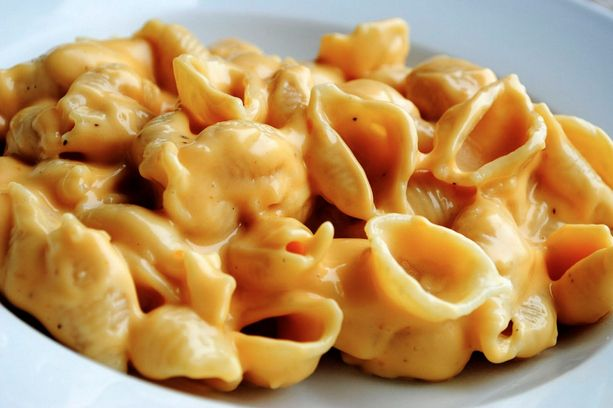

Home
Mac & Cheese!

Yummy Cheese Shells
There's not much to say about the incredible-ness that is mac n cheese made with shell pasta. It is just straight up AMAZING
Ingredients
- Shell Pasta
- Choice(s) of freshly grated cheese
- Milk
- Butter
- Flour
- Cheez-Its
- Salt and Pepper
- MSG
- Paprika
Steps
- Cook pasta according to directions to al dente
- Combine equal parts butter and flour to create a roux
- Once roux has come to, add 3 cups of milk
- Once milk has heated and begins to form bubbled, stir in and melt cheese(s)
- Pour pasta in casserole dish and mix in cheese sauce
- Top with crushed cheez-it and other seasonings
- Bake in oven at 350f until golden on top
- Enjoy!